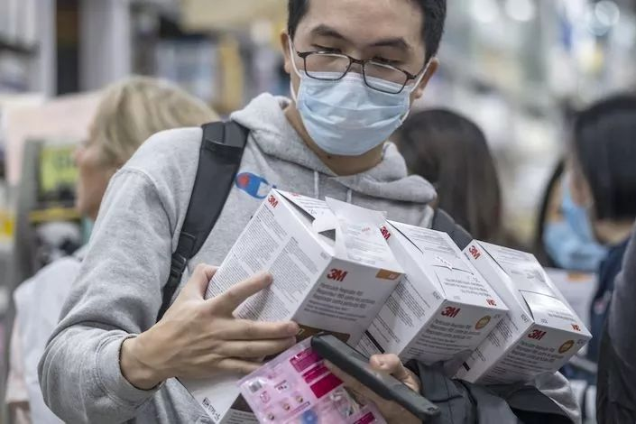
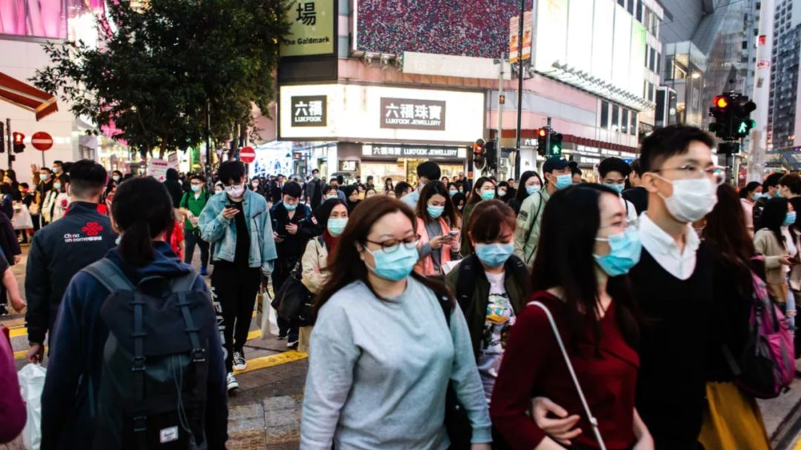

这座河南城市每天可以生产165万个口罩，但急需原材料
原文链接 备份链接 作者 | 张庆宁 出品 | 棱镜·腾讯小满工作室 大年初二（1月26日）这天，田书增一个小时之内，给人道了20多次歉。 每隔五到十分钟，这位河南省健琪医疗器械有限公司（下称“健琪医疗”）董事长就会接到一个电话，电话那头 …


文/谢如颖
编辑/杜强

自从新冠肺炎证实人传人以来，各类口罩——尤其是医用防护口罩（N95）——的全国性脱销似乎只在一夜之间。
一位业内人士告诉《时尚先生 Esquire》，全国的口罩产能在 1480 万左右（自国家发改委 2 月 3 号消息），但中国 14 亿人口，假设 5% 的人每天佩戴一次口罩，口罩每天的需求量是 7000 万。急迫需求和产能之间的缺口一时难以填补。
《时尚先生 Esquire》追溯了口罩供应链上的各个环节，发现这是一个人心扰动的行业，有暴利，有困惑，也有被责任驱动的抉择。

进退维谷的商家
_对于国内的口罩生产商来说，疫情发生在一个糟糕的时间点：_工人回家，原料短缺，城市封闭。他们应对的是一场凶猛的突然袭击。
刘学凯（河南戈尔医疗负责人）：
快过年的时候，疫情爆发，全国急需口罩，我们重新把工人召集过来。头几天工人没太大反应，后面工资翻三倍、吃住都包，有些才同意的。
1 月 18 号我找了趟班车，把已经回家的 20 多位工人拉回厂里。厂里有 8 条生产线，满负荷的话需要 100 多员工。好在现在员工都已到岗，政府给了支持和补贴。
我们现在简直不知道是白天还是黑夜，24 小时生产，2 班倒，每个工人一天工作十来个小时，原本熟练工工资一天 80 元左右，现在一线员工一天能拿到 500。普通员工的工资也在 300 左右。
但现在问题是原材料非常紧缺啊。外地出原材料的都封城，有的得提供政府公文。除夕当晚凌晨一两点，所有原材料用尽了，连塑料包装袋都没了，大年初一不得不休息一天。大年初二，公司采购经理带着 30 万现金去山东临沂的工厂进无纺布。对方不保证能装满货车。我说，要是不装满车，我以后再也不会进你的货。国内质量比较好的熔喷布的进价从 2 万 4 不断涨到了 4 万 5。这两天熔喷布吃紧，迫不得已工厂休息了半天，等晚上熔喷布到了继续加工。
口罩并不是一个赚钱产业，医用外科或一次性医用口罩的利润大概在几分钱。你现在不是说赔不赔的事了，你只要有机器，你只要有证件，有注册证，你是个口罩厂就有义务地去做。因为啥？这个社会现在确实需要这些，你不做从良心上也（说不过去），现在机器能转动的必须转动起来，不能停。


孙颖（某高端口罩品牌负责人）：
过去几年中国雾霾治理成果让大部分的口罩厂都濒临灭绝。我现在开玩笑说，这是一个情怀产品、赖生意，你哪儿控制得住？有雾霾才能卖口罩。
17 年口罩上线以来，我们卖了差不多 60 万只，其中有 50 万只是卖产品送的，送口罩人家说，「算了，还是给我一张 20 块钱的天猫卡吧」。我们产品放仓库存了两年半，头都大了。在双十一之前，免费送了人家 14000 盒，不然再放半年就过期了。代工厂天天催我说剩下的订单你什么时候生产，备好的原料放在代工厂的仓库里，他说你再不生产就都报废了，我也很痛苦，他也很痛苦。
我真的一点都不浮夸地说，做出口罩第一年我特别开心，觉得这款舒适性更好。我送朋友，但因为没有雾霾了，所有人都不要，半年之后觉得人家不理我，就不送了。到现在把剩余的十万只库存卖了，算算账，整体亏了小三百万。这次疫情，如果我们「运气」比较好的话，说不定能保本，这叫什么？你说这种生意有人做吗？
我们的那家代工厂，他 2017 年看到雾霾特别厉害，觉得口罩要爆发，把房子都抵押了，加上原来辛苦挣的钱，做这个口罩厂。三年过去了，真的是凭本事把这三百万亏完了。今年元旦他还跟我说，实在撑不住就算了。

关厂之前，突然无数人给他拿了无数订单，我给他打电话，他说我这辈子没见过这么多人捧着钱给他说，你赶紧给我做口罩，但没产能，他做不出来。
工人腊月二十都已经放假了，春节谁不回家？过去一两年这种惨淡经营，那老板都恨不得你赶紧回家吧，再也不要来了。所以，这两个因素加在一起，后期再想叫人来，工人已经叫不回来了。
我们的代工厂，我腊月二十七给打电话，我说你就二傻子，你为什么不出三倍工资给人，让他过来？他说亏怕了，不敢出这个钱。
三十那天，疫情看着特别吓人，我们发了通知，全体员工停止休假，兵分三路，其中一路去工厂。代工厂已经没有工人了，老板光杆司令一个人坐在那儿哭笑不得的，电话都接不过来。没办法，我们派十个自己的员工去。
初三初四我们直接四倍工资找了十几个临时工，把我们的人都顶出来，一方面他们效率低，另一方面因为太危险了。我们同事所在的小区已经有一个人确诊了，确诊那户 5 号楼，他们是 8 号楼。昨天上午我已经把所有人全部撤出来，都在家蹲着。我说情愿停工，也不能再冒生命危险干这个事。

金鱼（湖北仙桃相关人士）：
我亲戚是湖北仙桃一个口罩厂的老板。疫情发生后工厂急忙召回工人，有的回不来，封城了，有的不敢来。像我们开 8 倍工资都没有人愿意过来，请不到工人就自己家人去上班，只能这样。原本一天工资 90-100 元，现在最高能有 870 元。
2 月 1 号，当地政府关停了仙桃大量民用防护型口罩厂。作为中国最大的口罩基地之一，仙桃的口罩起码供给武汉是供得起的，然而武汉都这么窘迫，肯定有问题。现在口罩市场价这么高，炒到三四块一个。民用口罩厂不生产，市场供应关系超出了一个正常范围，这是什么促进手段？
有人说人家贩卖高价口罩，供给关系肯定应该打开，是不是？我们就可以以低价平衡这个市场，是吧？口罩大概在一个波动的范围，就是两块、一块或者一块五左右，这样一个价格群众才能接受。你也不用去打击什么高价。
价格疯涨
跟生产环节的人工不足、原料短缺相比，流通环节的扰乱是加倍的。有人趁机大发其财，也有人凭良心行事。

小刘（医用外科口罩经销商）：
20 号那天我在公司搞卫生，突然有人打电话问我，「口罩你确定能发货吗，你确定能发货吗？求求你发货。」说得我真的心肠都软了。我仓库里还有一些，我就说可以。
之后，他们就在豆瓣那里推。一个小时下了七百个单，把我吓疯了，平常一天最多接三十个单。我们是做医疗用品的，本来是对公给医院的，个人买的都很少，搞大清洁的时候戴一下就可以了。后来我才晓得是疫情。
我们设的库存都是很随意的，他们一下子抢购得太快了，我赶快把库存改了，最后就下架了。年底谁会囤那么多货？囤越多，钱就越多。
我连夜打电话给厂家，第二天开着车蹲在门口，要不我根本发不出去。后来厂家货给我拿空了，没办法。本来还有将近五十来单没有发出去，我只能跟他们打电话解释。
刚开始的时候我们是卖 25 一包，一包一百个，因为厂家那边说拿不着货，我就改了一下，最后涨到 40 块钱一包。同行的价格炒得太高了。刚开始一块、两块、三块，都是按个算，后来炒到一包四百、五百，六百都有了。还有人发布 15 块钱一个。我说我如果跟他们一样做推手的话，那根本就对不起我们自己的从业道德。

小斯（某医用 N95 口罩零售商）：
20 号疫情消息传出来，我就换了家快递，把几只医用 N95 口罩的打包价下调了 20，然后有人开始骂我，让我补差价，还说我国难当头擅自调价，真的非常寒心。
那段时间，进货经销商不给单据，他们也怕被查，我能理解。现在口罩厂的普通员工日工资都快到七八百了，确实成本涨了很多。23 号，我的进价已经到 19 块一个了。
后来媒体有报道，一家药店口罩卖 25 元，进价 19 元，被吊销营业执照和罚款。我看了非常害怕，我确实没有进货单据，理不正。我打算卖了这批就不进了。我只是个学生，没多少积蓄，卖口罩只是我的副业，挣点生活费而已。但罚钱的话搞不好学费都没了，我承受不起。
金鱼（仙桃民众）：
我从亲戚那里拿了一批货，有一批是民用 KN95 口罩，我卖人家十块钱，自己可能就赚一块钱，大家都觉得很便宜，大量要。后来有个客人他把我朋友圈屏蔽了，他还加了我朋友，我朋友突然和我说，「这不是你的图片吗？你看人家在网上卖 35 呢」。我说啊？
我找到他，跟他说我以后不会再给你供任何一个口罩的货，你以后不要找我合作。我说你能做第一次就能做第二次，以后你爱找谁去找谁。他说什么买卖不成仁义在，我说你拿我的东西去卖还好意思跟我说仁义？他说我哪有啊？然后我就把我朋友的截图发给他，他就沉默了。我把他拉黑了。
我当时就发现这个人真的是太恶心了，有人就会利用你的这种心。我觉得不能再放低价了，要价 20 块钱。有的人希望我能降价，从道德上攻击我，这样他好降进价，涨卖价。但我不变了，这样他就很难放高价。

公益人陈先生：
1 月 31 号凌晨 2 点，在我们一个物资募集群里，朋友说刚咬咬牙，拿下 2 万个口罩，4 块钱一个，我一看图心都碎了，就是普通的医用外科口罩。在此之前半小时，我面临同样的选择：普通外科口罩，4 块 5 毛一个，1 万个，说半小时不付款，就没了。我犹豫了几分钟，决定放弃。
就在这个价格的前一天，我们刚刚向湖北捐赠了 20 万个同样规格的口罩，是 1 块钱一个。同样的口罩，几个月前批量采购只要 4 毛钱，药店零售也才 6 毛钱。
郑鹤红（某慈善组织创建人之一）：
我们从 20 号到 23 号就开始采购物资，23 号付给某品牌口罩的大经销商 100 万货款，定了 8 万只医用 N95 口罩。等了一天多这个口罩量才生产出来。然后在厂门口，你知道发生了什么事吗？经销商把这批口罩转手卖给了二道贩子，我们的志愿者在门口就守着这批货，等着清点，就打起来了。第二天说，经销商答应再补回来 4 万个，一半。到现在一个都没发出来。
我们后来找遍了各种购买渠道。我一说价格，10 块钱左右，人家都不回复我，估计都把我拉黑了。还有个说他手里有 30 万个口罩，让他报个价，30 块钱一个，好吧，我拉黑他吧。
其他的就是没货。原因非常简单，慈善机构的价格是限死的，我们要是报价 25 一个的话，都不用发货，民众的口水就把我们淹死了。卖给我们，又没有利润，人家还不如去维护客户，卖高价，还能赚一笔。
14 块钱是中国思源基金会购买口罩的价格，它是国家一级公募基金会，最开始一两天网友骂的都是它。所以我们考虑只能 12 块钱之内，一旦被骂你的名誉全都没了，骂你吃回扣。你不做，你说采购不到，是不会挨骂的，对吧？
我们后来又得到了货源，境外的，可以直接邮寄中国。我们在商量怎么下单采购、核对数量，然后同伴说不行，因为是境外物资，新的文件要求境外（物资）到了海关自动归属湖北红会、慈善总会。文件特别详细，真的花了很多的心思。
我从事公益 17 年了，今年的经历我闻所未闻、见所未见，把我们给掐死了。过去在汶川和玉树，我们的身份还是很小的，都可以顺畅地去做救助。
2010 年玉树地震的时候，我们认识的一个主任，他现在已经是院长了，亲自带队去支援湖北武汉，他向我们求助，要防护物资。他本身是一个外科专家，地位、名声、钱都有了，亲自带队进去，特别负责任，对不对？跟我们说防护物资不够了，求我们给他一点，我们十年的救助伙伴，给不到他手里。

孙颖（某高端口罩品牌负责人）：
我们的口罩很晚才被挖出来，因为别人一定是先买一块钱的口罩，再买五块钱的口罩，最后才买更贵的口罩。一定是这样对不对？
我们自己口罩的变化从 20 号开始。钟南山说要戴口罩当天，基本上就断货了，还剩了不到 10 万只。线下卖了 5 万只，线上卖了 5 万只。我们自己都没当回事说卖就卖了，赶紧弄完拉倒，到年三十那天发现情况不对了。
有人在淘宝上开店卖我们的口罩，价格直接翻了十倍，你说这不是疯掉了吗？我们只能去投诉它，最后能成什么效果，现在我们也没有办法。也有人找到我，说一盒给我加多少钱，我说哪儿凉快哪儿待去。包括某家电商平台都找到过我，我都没有给，给了我们后期就完全失控，失控最后受损失的一定是我们。
大年三十，我们把所有地方能够找到的口罩，大概一万只全部拿出来，当天上午十点在网上全部卖出去了。
我们的订单量和流量比双十一涨了十倍，都是来骂你的：你为什么没有货，没货为什么还挂在上面，物流什么时候发货，为什么看不了快递？然后还有各种的宣泄啊：你为什么故意不卖给我，你卖这么贵还不卖给我，又伺候哪个老爷去了？各种破口大骂，有的直接问候祖宗。
当然还有投诉，说你们为什么涨价。这个事很搞笑的，他们给天猫投诉，给工商局投诉，投诉我们为什么涨到原价上去。昨天上午工商局的人还来，说你们怎么涨价了，我说没涨价啊，最后他走了，你说这多无聊不是。
全球采购
国内渠道难以指望，越来越多人盯上了国外。但随着疫情在其他国家爆发，此举也引发了争议。2 月 2 号晚上，美国、澳洲、土耳其、韩国、越南、印尼、印度、新加坡等国家开始禁止大批量出口口罩。

许许（中欧商学院深圳校友会秘书）：
除夕前一天，我们的校友企业要往前线捐物资，希望大家提供货源。我们联系到了各国的医疗物资购买渠道，在澳洲、南非、印度等地订购了十几万个医用 N95 口罩。
联系到韩国中间商时，刚开始价格是 10-11 块一个，我赶忙定了 10 万个。后面我又订了 5 万个，两天后中间商说厂家要涨价，涨到 13 块，而后又涨到 15 块，我同意了。但隔天早上我接到电话，这批货要涨到 18 块。我说不可能，18 块的话我们没必要参与物资竞价，最后涨价都涨到自己人手上。最后以 15 块确定了下来。
王宇宇（国内某外贸公司负责人）：
腊月 24 那天就有人问我，韩国有一批口罩，差不多有 500 万只，你要不要？这跟炒期货似的，谁敢买啊？
腊月 28 那天，我们一开会一算账，完蛋了，中国的口罩不可能供应上。我们一个同事带人直接杀到韩国，韩国是除了中国之外，全球第二大口罩生产国家。当时的想法是平抑市场。那时我们手里至少抓了 500 万只口罩的订单，其中的 300 万只我们交了 30 万定金给韩国厂家。虽说定了，但是心里非常纠结，你敢要吗？
那时口罩在韩国才不到三块钱。同事年三十晚上回来，初二又杀过去了，因为对方已经反悔了，赔了 30 万。他说 30 万我做不了你的订单了，转手给了中国另一个公司，对方出了两倍多的价格，用现金把这 300 万订单截胡走了。
政府征用之后
1 月 26 日，国务院强调要统筹调配全国医疗物资，大部分口罩厂被政府征用，优先保障物资最紧缺的湖北和武汉，产品不再销售于经销商。医用口罩成为了国家管控类产品。

刘学凯（河南戈尔医疗负责人）：
现在我们就是政府管控，拿政府批文和调货单，我们放货。当然也有极个别的。医院开救护车来拉，也是给医院一些。今天陕西那边来了两三波，到现在陕西的救护车还在门口停着呢。不给人家确实感觉不好意思。他们说他们医院护士啥的口罩戴都不够，都没有，就是消消毒自己还用，确实国家这块量还是不够用的。人家来了就给人家拿个一箱两箱的。
孙颖（某高端口罩品牌负责人）：
前几天我们的代工厂被征用，政府清点库存，确认有多少产能，多少人在生产，并且让他们以最快速度出产品。我们的产品也拿给厂家看了，对方说你们（的产品制造起来）太慢了，不太合适。商量后，分给了我们一些产线，但那些产线维护更新就需要1、2个月，还不如直接买新的。
现在我们在代工厂对面找了一个地方，准备建一台生产线，自己找工人，最快速度复工。现在产能每天两三千只，愁的要死，都不够顾客朋友分的。我自己也没有存货。前几天我把放办公室放了N年的研发样品都翻出来，一箱，全部分出去了。我自己车里还有两盒口罩，20只，这是我们一家五口人的20只。
年前给亲戚朋友送礼，我也不知道送什么，就送口罩，都是十盒十盒地送。昨天朋友给我发微信，他说今年送礼最贵重的就是你们，因为是保命的。
口罩在哪里？
自 1 月 20 号到 2 月 1 号，北京的市民服务热线中，有 9700 余名市民反映买不到口罩，5700 余名市民反映口罩涨价问题。

石女士（北京民众）：
从 1 月 20 号到现在，我没买到过一个口罩。
我去了家门口的 3 家药店，也尝试了淘宝、京东、拼多多、物美多点、京东七鲜超市、盒马超市、饿了么送药上门、美团送药上门，都买不到口罩。我家有日本那种海绵口罩，后来发现这类口罩不符合要求。
现在我出门只能带个海绵口罩再加个纱布口罩，先凑合着。毕竟家里蔬菜、水果和生活用品必须要出去买，开始物美多点还能送一些，这两天已经全部要求自提了，不频繁下楼买东西也不行了。口罩也只能反复使用，每次出门回家用威露士洗了，晾干，吹风机加热吹一下，自己感觉还不错。
如果家里都是年轻人吃个一两星期方便面我自己也能忍，可家里 80 多岁的老人不行呀。我要上医院拿老人必需的降压药，急需口罩。由于北京市政府没有公布病例具体发生在哪些医院，我们无法判断去医院拿药的风险有多大，去哪个医院或哪个社区医疗站更安全。但老人的药又不能断。
2 月 2 号，我在微博上 @ 各种北京生活相关的微博号，询问口罩供应和医院的事项，12345 市民服务热线答复建议我关注各大商场、药店售卖情况。我回复他们，要是每天上街到处关注，被传染了不是更得不偿失。最后对方说，「您的建议我们会转交职能部门，感谢您对我们的信任和关注。」
2 月 4 日，我又去了趟药店，药店只开了一半的门，门口用简易小桌阻挡着，桌上挂着告示：店内暂无酒精和口罩。我又发了条微博：北京的口罩在哪里……
（应受访者要求，文中个别身份信息匿名处理。）

C O N T R I B U T O R S
（文中图片均来自于网络）
责编：Neil
执行：本本

fine直击NEIL BARRETT米兰秀场，和王子异聊了33个真心话
秀场很厉害，“超模异”很能聊

疫情封城下，这位白血病姑娘想到了安乐死
「当妈妈真的很痛苦，要是没做妈妈就没这么痛苦了。」
__________________


**给我好看！ **
**
原文链接 备份链接 作者 | 张庆宁 出品 | 棱镜·腾讯小满工作室 大年初二（1月26日）这天，田书增一个小时之内，给人道了20多次歉。 每隔五到十分钟，这位河南省健琪医疗器械有限公司（下称“健琪医疗”）董事长就会接到一个电话，电话那头 …
原文链接 备份链接 非常时期，武汉成了全国人民挂念、祈福的城市。封城后，武汉人民的真实生活是什么样？ 正和岛自1月26日起特别推出《叶青：我在武汉疫区的第N天》专栏。叶青是一位定居武汉40年的市民，也是一名学者和官员。接下来的一段时间， …
原文链接 备份链接 图片来源：海洛创意 记者：梁宙 “ 武汉一线医护人员物资仍有较大缺口，湖北省卫生计生宣传教育中心通过官方微信公号“健康湖北”发布了武汉各大医院的接受社会捐赠公告。其中，有的医院求援公告已更新至第五版。 ” 武汉一线医护 …
原文链接 备份链接 - 疫 情 之 下 - 想起从武汉回来经历的种种，心里有些五味杂陈，我为村干部们的疫情防控工作点赞，为自己无恙感到庆幸，也更加迫切希望疫情早日消散，生活能重新美好起来。 ” 1 1月学期末，忐忐忑忑地考完所有考试，我终 …
原文链接 备份链接 有武汉人滞留在外地，就有外地人滞留在武汉。 1月23日凌晨，武汉宣布封城。 2月10日，湖北省以外的地区陆续开工，这让滞留在武汉的人更希望知道出城的日期。 恰值人口高峰流动期，没有数据统计滞留在武汉的人到底有多少。但各 …